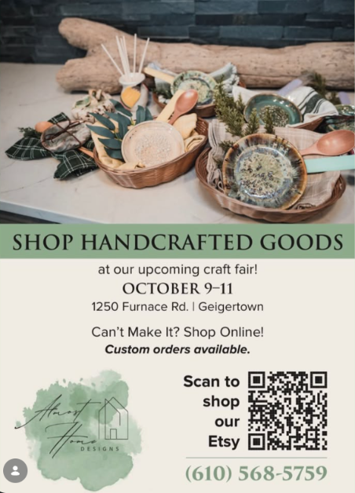

Designers. Makers.
People Who Love Home.
Almost Home Designs is built around the idea that home is both a place and a feeling.

From Spaces to Objects.
Almost Home Designs brings together remodeling, interior design, pottery and carpentry. That combination makes the brand unusual in a good way: clients can come for a transformed room, a handmade piece, or simply inspiration for making home feel more personal.
The visual direction is warm, grounded and creative—sage greens, natural wood, handcrafted textures and practical spaces designed for everyday life.
Why Almost Home?
Because finishing a room is not the same as making it feel like home.
Thoughtful
Choices should have a reason—function, feeling, longevity or all three.
Handmade
Variation and character are part of what makes an object or space personal.
Livable
Beautiful spaces still need to work for real people, routines and families.